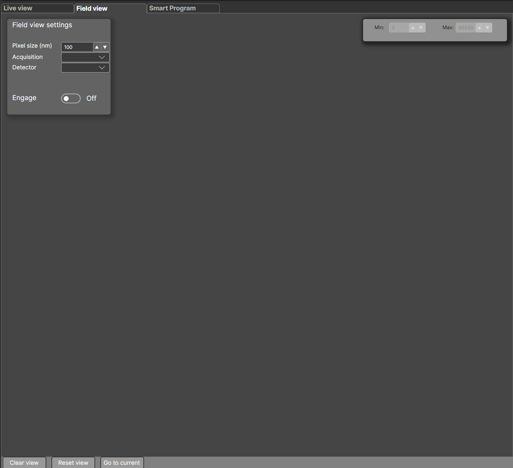
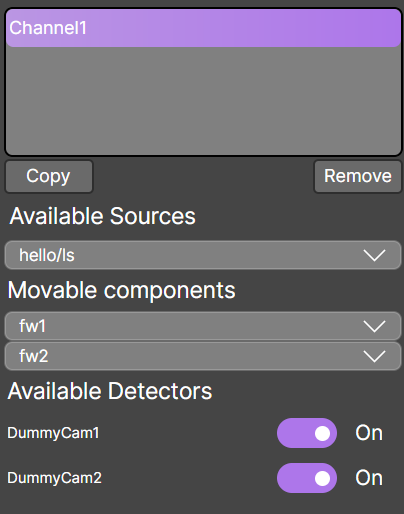
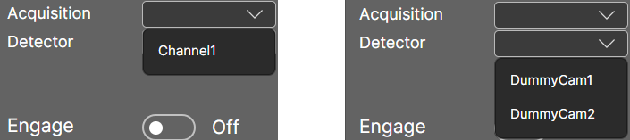

Using the Field Viewer for Visualizing Large Areas
In addition to standard image processing tools, Imager provides support for basic tile scan visualization through the Field Viewer utility.
When entering the Field Viewer, this is the default window you will see:

You can now configure the Field Viewer for your acquisition.
Setting up the Field Viewer
The Field Viewer can be used in live or experiment mode. To use it correctly, you need to know the virtual pixel size (in nanometers) of your final image.
The virtual pixel size can be calculated as:
Pixel size (nm) = Physical camera pixel size / Total system magnification
Input Fields
Once the pixel size is configured, you need to set the following:
- Acquisition – The name of the acquisition setting from which the data will be displayed
- Detector – The name of the detector within that acquisition setting
Example:
We are imaging live using the acquisition setting Channel1:

For Channel1, two detectors are enabled: DummyCam1 and DummyCam2.
In the Field Viewer, the options for acquisitions and detectors will appear as:

Select the desired Acquisition and Detector from the dropdown menu, then press Engage to enable the update loop.
Field Viewer Settings
Contrast for each Field Viewer can be adjusted independently by modifying the minimum and maximum displayed values in the top-right corner.
Additional actions:
- Clear view – Clears all displayed images for all acquisition/detector pairs
- Reset view – Resets the viewport to default transformations
- Go to current – Centers the viewport on the current stage position